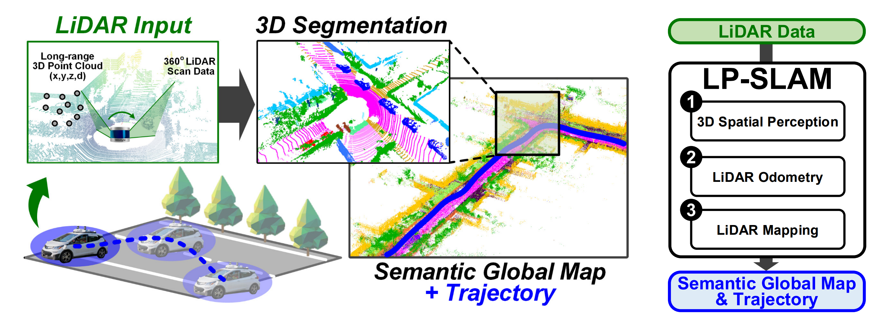
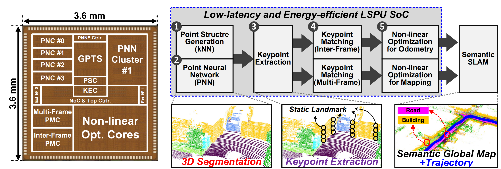

LSPU: Real-Time LiDAR-SLAM SoC
ISSCC 2024
I was responsible for building the real-time demo system for LSPU. This involved setting up the full demo pipeline — integrating the chip's outputs into a live visualization that could be shown at the conference.
The demo showcases LSPU running LiDAR-SLAM in real time: point cloud segmentation and simultaneous localization and mapping on live LiDAR input, all on-chip without a GPU.


LSPU is a fully integrated real-time LiDAR-SLAM SoC fabricated in 28nm CMOS (3.6 × 3.6 mm²). It performs point neural network segmentation and multi-level kNN acceleration entirely on-chip, achieving 20 FPS at 164.9 mW — 1,826× better energy efficiency than a GPU platform. Published at ISSCC 2024 by UNIST ISL.